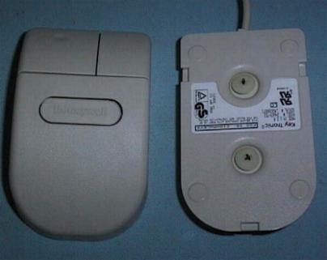
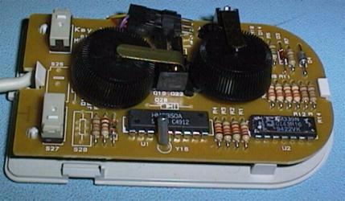

Instead of a ball this mouse uses inclined disks set to rotate at 90 degrees to each other.

The two black devices are encoding wheels with slots in them
The LED devices are located inside the encoder wheels and shine out through the slots
Photo devices on the outside of the wheels detect movement.